Tiê & Tiê-preto
Autênticos, únicos e solares.
Cabernet Franc 2025, em duas maturações: ânfora de grès e carvalho francês.
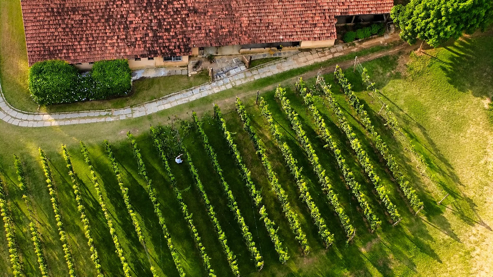
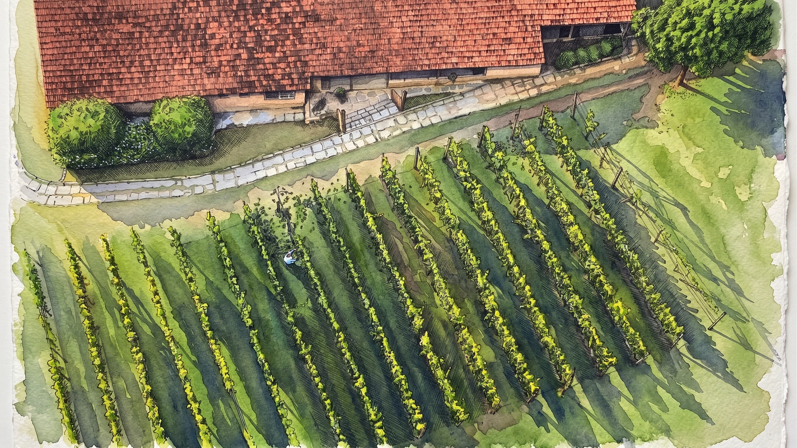
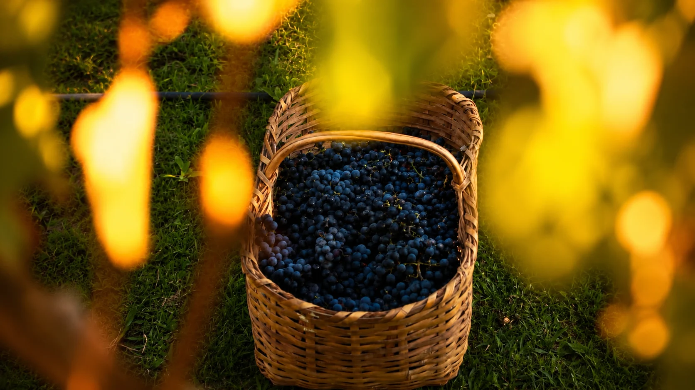
Em meio à Mata Atlântica do Sul Fluminense, a Vila Botané é uma microvinícola dedicada à produção de pequenos lotes. Cultivamos uma relação atenta com a terra, observando o relevo, o clima e os ciclos da natureza para criar vinhos que expressem, com autenticidade, as características singulares de onde nascem. Mais do que seguir padrões, buscamos preservar a verdade de cada safra, com vinhos que tenham identidade, personalidade e origem.
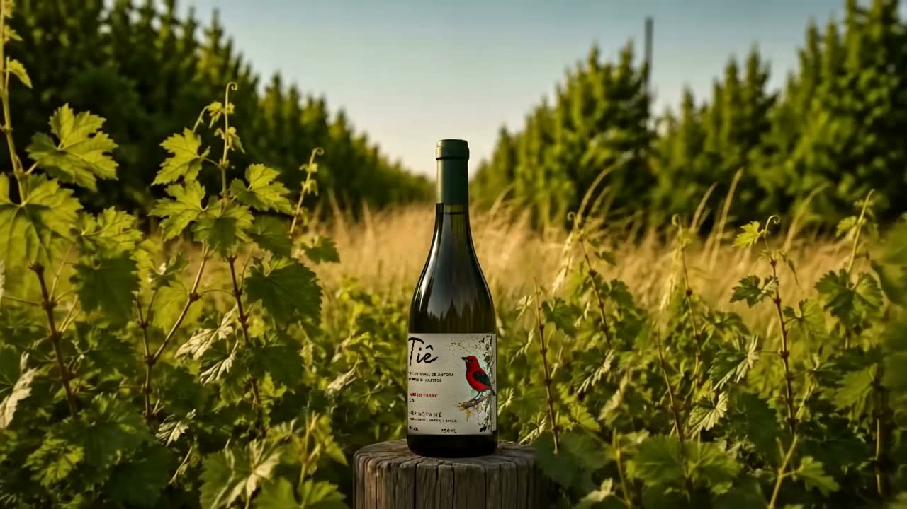
Tiê & Tiê-preto
Cabernet Franc 2025, em duas maturações: ânfora de grès e carvalho francês.
Nasceram da mesma safra.
Da mesma uva.
Da mesma filosofia.
Mata Atlântica
No Vale do Café, a Mata Atlântica permanece entre montanhas, vales e antigas fazendas que atravessam a paisagem fluminense. Em Vassouras e seu entorno, seus remanescentes formam um mosaico de florestas, nascentes e áreas de regeneração que ajudam a conservar a biodiversidade e a riqueza natural deste território.
É nesse cenário que estão nossas videiras: cercadas pelo verde da mata, sob um clima marcado pela umidade, pelas manhãs de neblina e pelas noites mais frescas que acompanham o relevo da região.
Para a Vila Botané, a mata não é apenas parte da paisagem. Ela pertence ao nosso terroir, um elemento vivo que ajuda a definir o lugar onde nossas uvas amadurecem e onde cada safra encontra sua própria expressão.
Entre a mata e as videiras, nasce a identidade de um território.
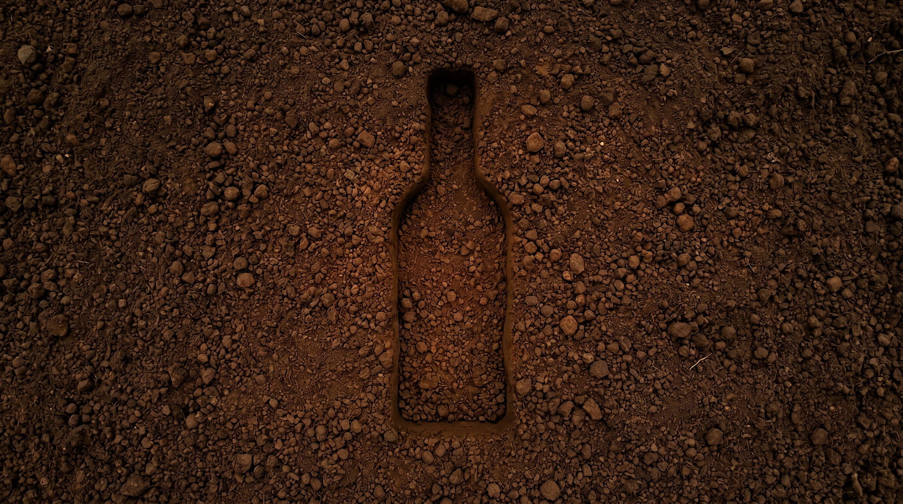
O terroir
Expressão da nossa terra
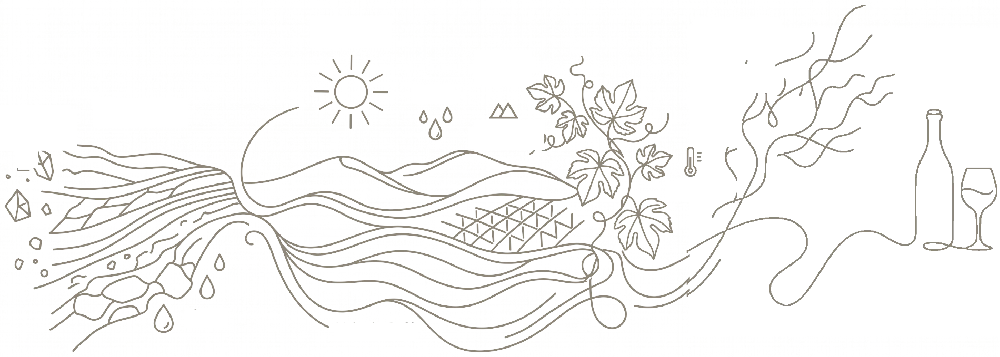
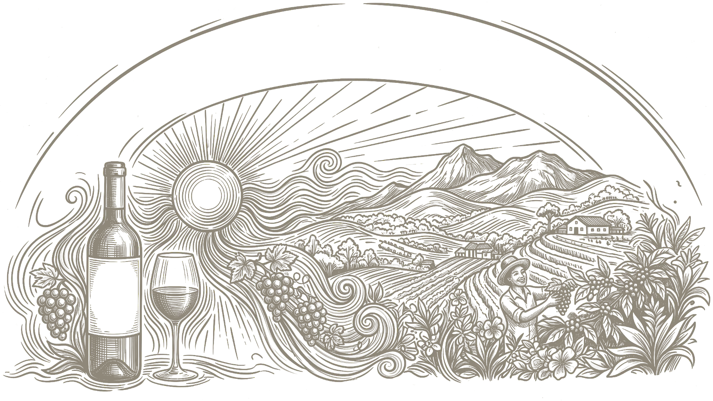
01
Terroir é o encontro entre solo, relevo, altitude, clima e a relação humana com a terra, um conjunto de fatores que influencia a forma como a uva amadurece e se expressa.
Na Vila Botané, esse conjunto ganha características próprias entre as colinas do Vale do Café, onde diferentes formações de solo e o relevo das encostas criam condições particulares para o cultivo. É a partir da observação dessas nuances, safra após safra, que buscamos compreender seu potencial e traduzi-lo em vinho.
Por isso, não partimos de uma fórmula pronta. Partimos do que a terra oferece, para que cada vinho revele, com autenticidade, a sua origem.
02
Entre as colinas do Vale do Café, a Vila Botané encontra um território de características singulares. Em Vassouras, predominam os Argissolos Vermelho-Amarelos, acompanhados por Latossolos e, nas áreas de relevo mais acidentado, Cambissolos. São solos formados sobre um território de morros e encostas, marcado pela diversidade geológica e pela presença histórica da Mata Atlântica.
03
Nosso clima se caracteriza por relevo ondulado e montanhoso somado ao clima tropical de altitude, com verões quentes e chuvosos com período de inverno mais seco. A combinação entre solo, altitude, relevo, disponibilidade hídrica e luminosidade influencia o desenvolvimento das videiras e a maturação das uvas e, portanto, a expressão de cada safra.
04
Tudo isso se traduz num vinho solar, vivo e frutado, concebido para dialogar com a luz, o calor e a paisagem fluminense. Não procuramos reproduzir outro lugar: revelamos o nosso, o Vale do Café em uma nova expressão.
Altitude
520M
Acima do mar
Latitude
22°26S
Ponte Funda, Vassouras
Solo
Argissolo vermelho-amarelo
Latossolo e cambissolo nas encostas
Pluviosidade
1590MM
Média anual
Colheita
Janeiro fevereiro
Manual, em caixas rasas
03 Nossos vinhos
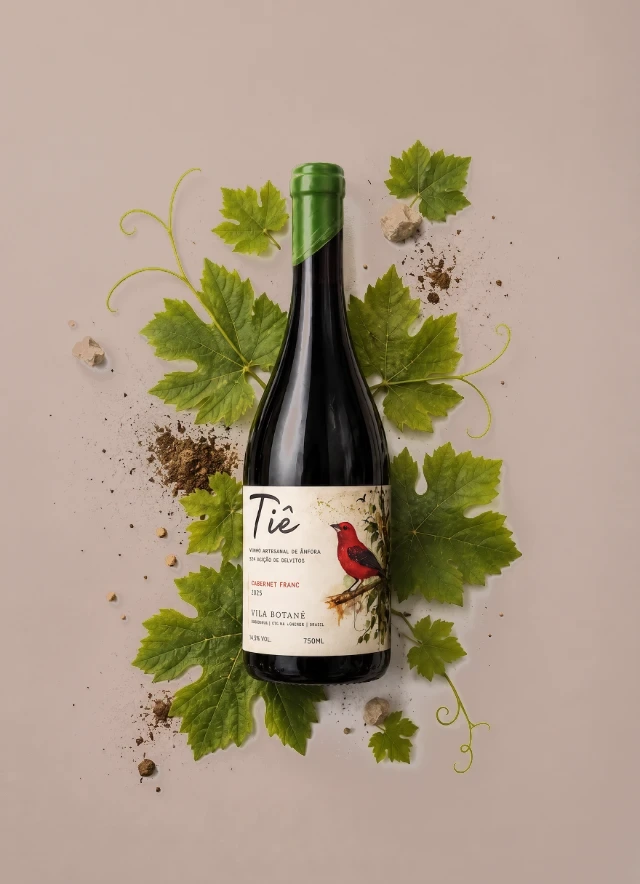
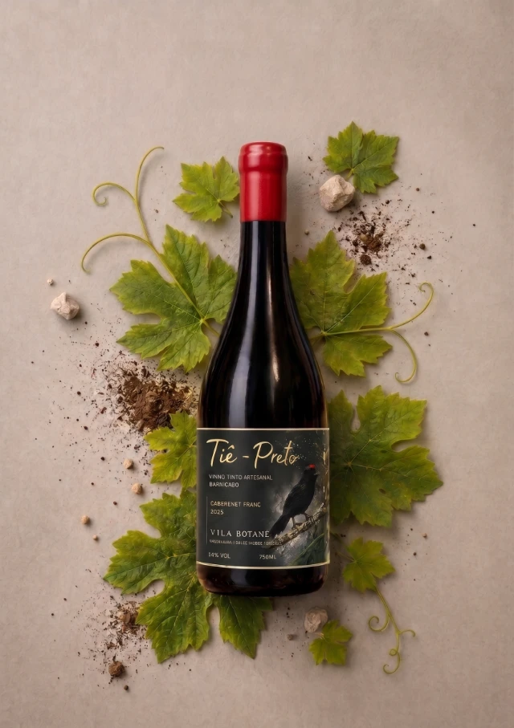
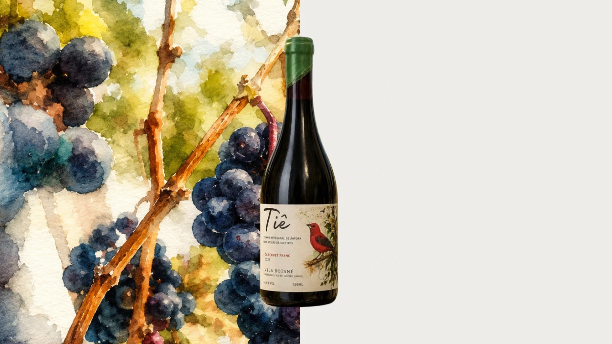
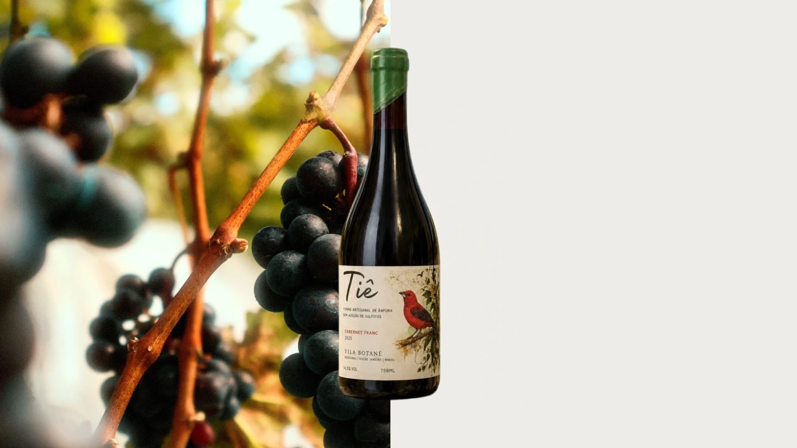
Colheita manual e fermentação espontânea com leveduras nativas. Amadurecimento de 12 meses em ânfora de cerâmica grès, que preserva a pureza da fruta e permite uma expressão mais direta do terroir.
Solar, autêntico e vivo.
O nome faz referência ao Tiê-Sangue, ave nativa da Mata Atlântica que envolve nosso vinhedo e inspira a identidade da Vila Botané. Para nós, terroir também é a biodiversidade que habita o entorno.
R$ 280 por garrafa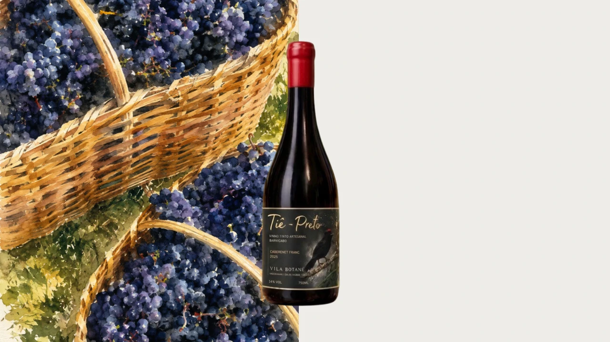
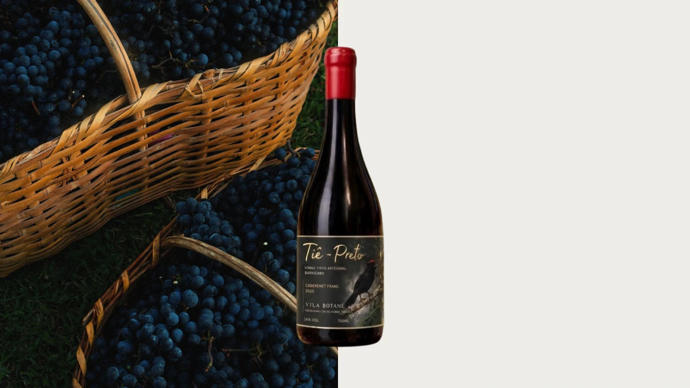
Colheita manual e fermentação espontânea com leveduras nativas. Amadurecimento de 8 meses em barrica de carvalho francês, que acrescenta textura, estrutura e complexidade ao vinho.
Solar, autêntico e vivo.
O nome faz referência ao Tiê-Preto, ave nativa da Mata Atlântica que envolve nosso vinhedo e inspira a identidade da Vila Botané. Para nós, terroir também é a biodiversidade que habita o entorno.
R$ 340 por garrafaReserva
R$ 280
A garrafa fica reservada em seu nome e é retirada aqui na vinícola.
Conversar no WhatsAppReserva pelo Pix
R$ 280
Vila Botané Hotel Vinícola e Restaurante
Carta de reserva
Guardamos uma garrafa
Tiê, Cabernet Franc 2025
Sua chave
VB-000000
Diga esta chave ao chegar. A garrafa espera por você na encosta, em Vassouras.
Mande a chave para nós: é assim que a reserva entra na nossa lista. Confirmamos quando o Pix cair.
Enviar a chave no WhatsAppSolar, vivo e autêntico. Um vinho que carrega em cada taça a identidade de um terroir singular, revelando uma expressão autêntica e verdadeira.